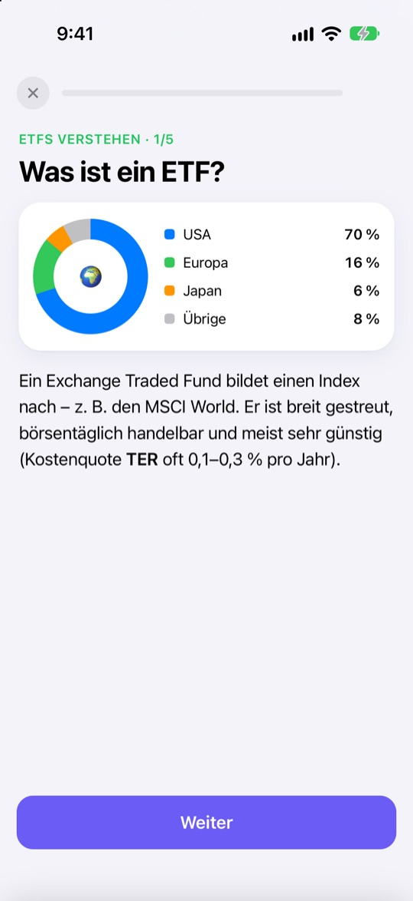

Geldanlage
Was ist ein ETF? Einfach erklärt für Anfänger
ETF klingt technisch, dahinter steckt aber eine einfache Idee: ein Korb aus vielen Aktien, den du mit einem einzigen Kauf bekommst. Die wichtigsten Begriffe, einfach erklärt.

ETF steht für Exchange Traded Fund, auf Deutsch börsengehandelter Fonds. Die meisten ETFs bilden einen Index nach, zum Beispiel den DAX, den S&P 500 oder den MSCI World. Kaufst du einen Anteil, bist du an allen Unternehmen in diesem Index beteiligt, je nach ihrem Gewicht.
So funktioniert ein ETF
Ein Index ist eine Liste von Unternehmen nach festen Regeln. Der MSCI World enthält zum Beispiel über 1.300 große und mittelgroße Unternehmen aus 23 Industrieländern. Ein ETF auf diesen Index kauft diese Aktien in passender Gewichtung. Steigt der Index, steigt der ETF, fällt der Index, fällt auch der ETF.
Anders als bei aktiv gemanagten Fonds sucht beim ETF niemand gezielt Aktien aus. Deshalb sind ETFs meist deutlich günstiger. Und weil sie an der Börse gehandelt werden, kannst du sie wie eine Aktie über deinen Broker kaufen und verkaufen.
Die wichtigsten Begriffe
| Begriff | Bedeutung |
|---|---|
| Index | die Liste von Unternehmen, die der ETF nachbildet |
| TER | laufende Kosten pro Jahr, als Prozentsatz des Anlagebetrags |
| Physische Replikation | Der ETF kauft die Aktien des Index tatsächlich. |
| Synthetische Replikation | Der ETF bildet den Index über ein Tauschgeschäft (Swap) nach. |
| Thesaurierend | Erträge wie Dividenden werden automatisch wieder angelegt. |
| Ausschüttend | Erträge werden regelmäßig auf dein Konto ausgezahlt. |
| Tracking Difference | Abweichung der ETF-Rendite von der Index-Rendite, inklusive aller Kosten |
Was kostet ein ETF?
Die laufenden Kosten (TER) liegen bei breiten Aktien-ETFs oft zwischen 0,1 und 0,3 % pro Jahr. Bei 10.000 € und 0,2 % sind das 20 € im Jahr. Dazu kommen die Kosten deines Brokers: Ordergebühren, der Spread zwischen Kauf- und Verkaufskurs und eventuell Gebühren für Sparpläne. Wie stark sich Kosten über Jahrzehnte auswirken, zeigt eine Tabelle im Artikel Börse lernen in 7 Schritten.
ETF-Sparplan einfach erklärt
Mit einem Sparplan kaufst du regelmäßig für einen festen Betrag ETF-Anteile, zum Beispiel jeden Monat 50 €. Sind die Kurse niedrig, bekommst du für dein Geld mehr Anteile, sind sie hoch, weniger. Ein vereinfachtes Beispiel über drei Monate:
| Monat | Kurs | Sparrate | Gekaufte Anteile |
|---|---|---|---|
| 1 | 10 € | 50 € | 5,00 |
| 2 | 8 € | 50 € | 6,25 |
| 3 | 12 € | 50 € | 4,17 |
| Summe | 150 € | 15,42 |
Du hast im Schnitt 9,73 € pro Anteil bezahlt, obwohl der durchschnittliche Kurs bei 10 € lag. Dieser Durchschnittskosten-Effekt ist kein garantierter Vorteil. Er nimmt dir aber die Frage nach dem richtigen Zeitpunkt ab. Wie sich ein Sparplan über Jahre entwickeln kann, zeigt der Artikel Investieren lernen.
Sind ETFs sicher?
ETFs sind Sondervermögen. Geht der Anbieter pleite, ist dein Geld also nicht weg. Vor Kursverlusten schützt das aber nicht: Fällt der Markt, fällt auch der ETF, bei Aktien-ETFs in Krisen auch um ein Drittel oder mehr. Breite Streuung senkt das Risiko einzelner Unternehmen, nicht das Risiko des gesamten Marktes.
Thesaurierend oder ausschüttend?
Bei einem thesaurierenden ETF bleiben Erträge im Fonds und wachsen mit, der Zinseszins arbeitet automatisch. Bei einem ausschüttenden ETF bekommst du die Dividenden regelmäßig ausgezahlt und entscheidest selbst, was damit passiert. In Deutschland fällt bei thesaurierenden Fonds zudem jedes Jahr die Vorabpauschale an, sofern der Basiszins positiv ist. Sie wird mit dem Sparerpauschbetrag verrechnet.
ETFs in InQuestly lernen
Im Gratis-Kurs „Investieren 101“ lernst du Sparplan, Streuung und die Wahl eines Welt-ETFs in Lektionen von rund fünf Minuten, jeweils mit Quiz. Die vertiefende Lektion „ETFs verstehen“ gehört zu InQuestly Pro. Wer erst einmal wissen will, welche Apps es für Anleger überhaupt gibt, findet einen Überblick im Artikel Aktien-App für Anfänger.
Häufige Fragen
Was ist ein ETF einfach erklärt?
Ein ETF ist ein Fonds, der an der Börse gehandelt wird und meist einen Index nachbildet. Mit einem Anteil bist du an allen Unternehmen im Index beteiligt.
Welcher ETF ist gut für Anfänger?
Viele Einsteiger beginnen mit einem breit gestreuten Welt-ETF, etwa auf den MSCI World oder den MSCI ACWI. Welcher passt, hängt von Zielen, Kosten und Risikobereitschaft ab. Das hier ist keine Anlageberatung.
Kann man mit ETFs Geld verlieren?
Ja. Fällt der Index, fällt auch der ETF. Breite Aktienindizes haben sich in der Vergangenheit über lange Zeiträume erholt, eine Garantie ist das aber nicht.
Was ist der Unterschied zwischen ETF und Fonds?
Ein ETF ist ein Fonds, der an der Börse gehandelt wird und meist passiv einen Index nachbildet. Klassische aktive Fonds wählen Aktien gezielt aus und sind dadurch meist teurer.
Wie viel kostet ein ETF-Sparplan?
Laufende Kosten (TER) plus mögliche Ausführungsgebühren beim Broker. Viele Broker bieten ETF-Sparpläne günstig oder ganz ohne Ordergebühr an.
Dieser Artikel dient der Bildung und ist keine Anlageberatung. Beispiele sind vereinfacht und ohne Steuern dargestellt.